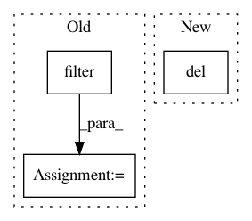

81460887a6dc118719168c98a0d7543b758d2040,tiny_notebook/protobuf/__init__.py,,,#,12
Before Change
// Filter through the classes to find those in CamelCase
camel_case_name = re.compile("([A-Z][a-z0-9]*)+")
module = sys.modules[__name__]
for name in filter(camel_case_name.match, dir(notebook_pb2)):
setattr(module, name, getattr(notebook_pb2, name))
// Clear out all temporary variables.
del notebook_pb2, re, sys, camel_case_name, module
After Change
// Clear out all temporary variables.
sys.path.pop()
del os, sys
// import importlib.util
// import os
In pattern: SUPERPATTERN
Frequency: 3
Non-data size: 3
Instances
Project Name: streamlit/streamlit
Commit Name: 81460887a6dc118719168c98a0d7543b758d2040
Time: 2018-01-17
Author: adrien.g.treuille@gmail.com
File Name: tiny_notebook/protobuf/__init__.py
Class Name:
Method Name:
Project Name: osmr/imgclsmob
Commit Name: d852c93925137c7bfcc7c78559f1b0e66acbdabb
Time: 2019-04-11
Author: osemery@gmail.com
File Name: convert_models.py
Class Name:
Method Name: convert_pt2pt
Project Name: mne-tools/mne-python
Commit Name: 9f231cfa8416b5bfe06dc996fa6d50c87b488d37
Time: 2021-01-07
Author: larson.eric.d@gmail.com
File Name: examples/inverse/plot_multidict_reweighted_tfmxne.py
Class Name:
Method Name: